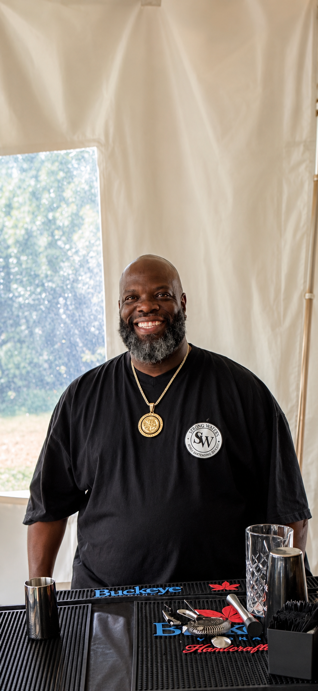

Care First
Every guest should feel seen, respected, and served with a smile.
Meet The Owner
Michael Allen brings heart, hustle, and hospitality to every event.

Strong Waters Bartending LLC is led by owner Michael Allen, born in 1967 in Cincinnati, Ohio. With more than 17 years of bartending experience and a business that has been proudly serving events since 2024, Michael built Strong Waters around more than just drinks — he built it around people. Every event is treated with care, respect, and a genuine desire to make guests feel welcomed, celebrated, and taken care of.
Michael is known for his big personality, hardworking spirit, and the kind of energy that turns a good party into a memorable one. People love him because he shows up with professionalism, warmth, and a natural ability to connect with everyone in the room. Alongside his dedicated staff, he brings dependable service, clean presentation, and a caring attitude that makes clients feel confident from the first conversation to the final pour.
“Good service pours the drink. Great service sets the tone.”
Our Standard
Every guest should feel seen, respected, and served with a smile.
Big personality, clean presentation, and dependable event flow.
From intimate gatherings to packed rooms, the goal is always unforgettable service.